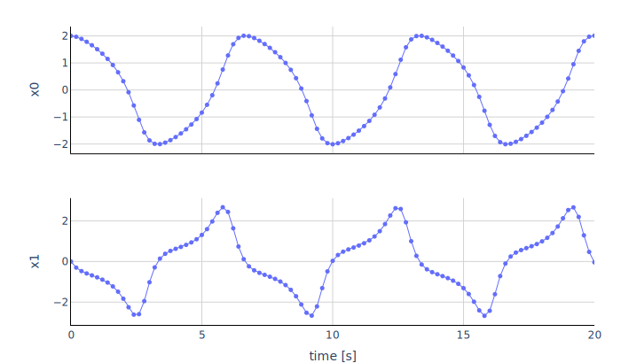

The model implements the Van der Pol oscillator.
der(x0) = x1
der(x1) = mu * ((1 - x0 * x0) * x1) - x0
with the variables
| Variable | Start | Unit | Causality | Variability | Description |
|---|---|---|---|---|---|
| time | independent | continuous | Simulation time | ||
| x0 | 2 | output | continuous | the first state | |
| der(x0) | local | continuous | |||
| x1 | 0 | output | continuous | the second state | |
| der(x1) | local | continuous | |||
| mu | 1 | parameter | fixed |
The plot shows the trajectories of the output variables computed with fmusim.
fmusim --interface-type me --solver cvode --output-interval 0.2 --output-file VanDerPol_out.csv VanDerPol.fmu